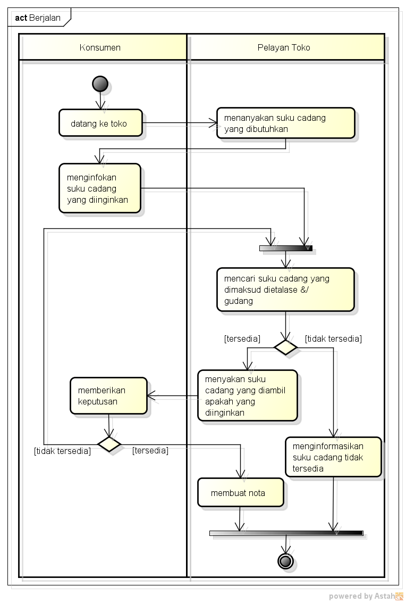

- Perkuliahan selama ramadhan diundur 1 jam, jadi dimulai pukul 9 pagi
- Kehadiran dan tugas (menyadur dengan membuat file index.html di github setiap pertemuan), UTS (individu tentang UML), UAS (Persentasi proyek kelompok, Jangan Lupa Bikin Kelompok)
Menganalisa masalah - Menganalisa sistem berjalan - Membuat Activity Diagram
- Analisis Masalah sama dengan mencari sebuah masalah. Untuk memudahkan masalah yang terjadi/solusi, dengan menganalisa masalah sehingga kita dapat mengusulkan apakah akan masuk(dibuat) ke sistem atau aplikasi.
- Analisis Sistem Berjalan bisa disebut menganalisa proses bisnis. Artinya, menganalisis proses/alur kerja/prosedur pada sebuah sistem. Setelah menganalisis, lalu gambarkan sistem berjalan tersebut ke diagram activity.
- Diagram Activity menggambarkan aliran kerja atau aktivitas dari sebuah sistem atau proses bisnis berjalan. Diagram ini menggambarkan aktivitas sistem bukan apa yang dilakukan aktor.
Dari Analisis sistem berjalan berikut:

Hasil setelah digambarkan di diagram activity:

**Catatan untuk diagram activity:
- 2 input tidak boleh langsung masuk, harus menggunakan join. Begitu juga 2 output langsung keluar, harus menggunakan merge
- Cara taruh activity diagram di word/bentuk gambar, ctrl+A > copy to clipboard > BMP,PNG